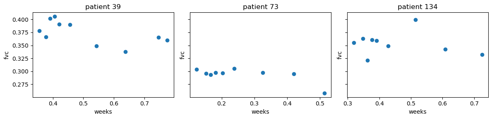
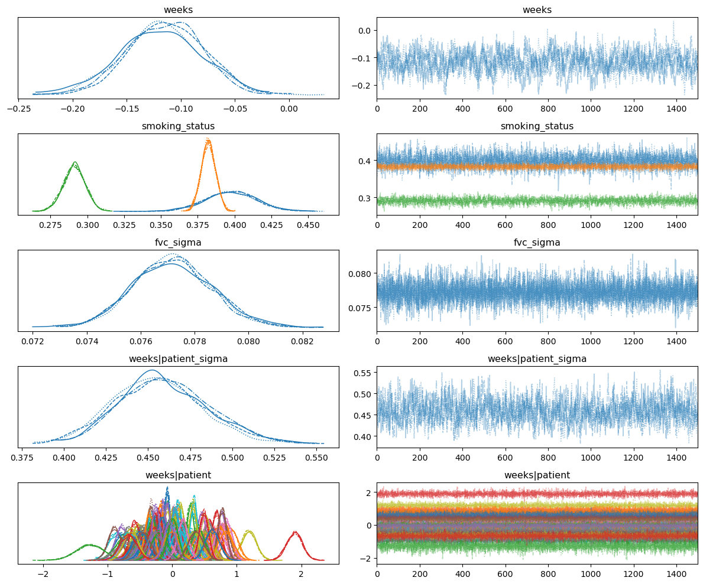
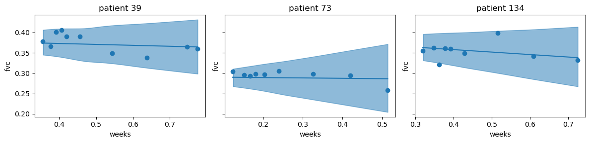
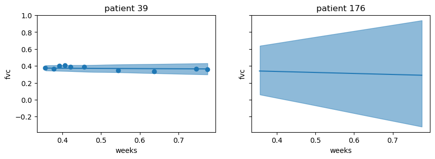
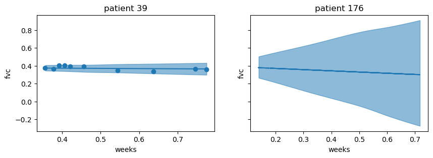
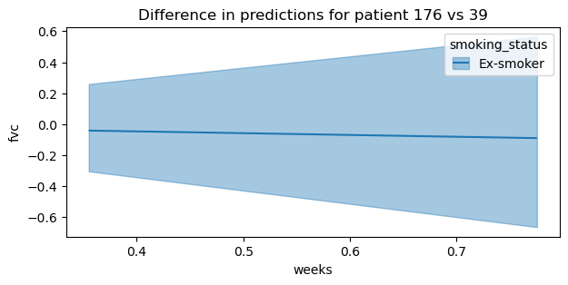

Predict New Groups with Hierarchical Models in Bambi
Predict New Groups
In Bambi, it is possible to perform predictions on new, unseen, groups of data that were not in the observed data used to fit the model with the argument sample_new_groups in the model.predict() method. This is useful in the context of hierarchical modeling, where groups are assumed to be a sample from a larger group.
This blog post is a copy of the zero inflated models documentation I wrote for Bambi. The original post can be found here.
Below, it is first described how predictions at multiple levels and for unseen groups are possible with hierarchical models. Then, it is described how this is performed in Bambi. Lastly, a hierarchical model is developed to show how to use the sample_new_groups argument in the model.predict() method, and within the interpret sub-package. For users coming from brms in R, this is equivalent to the sample_new_levels argument.
Hierarchical models and predictions at multiple levels
A feature of hierarchical models is that they are able to make predictions at multiple levels. For example, if we were to use the penguin dataset to fit a hierchical regression to estimate the body mass of each penguin species given a set of predictors, we could estimate the mass of all penguins and each individual species at the same time. Thus, in this example, there are predictions for two levels: (1) the population level, and (2) the species level.
Additionally, a hierarchical model can be used to make predictions for groups (levels) that were never seen before if a hyperprior is defined over the group-specific effect. With a hyperior defined on group-specific effects, the groups do not share one fixed parameter, but rather share a hyperprior distribution which describes the distribution for the parameter of the prior itself. Lets write a hierarchical model (without intercepts) with a hyperprior defined for group-specific effects in statistical notation so this concept becomes more clear:
$$\beta_{\mu h} \sim \mathcal{N}(0, 10)$$ $$\beta_{\sigma h} \sim \mathcal{HN}(10)$$ $$\beta_{m} \sim \mathcal{N}(\beta_{\mu h}, \beta_{\sigma h})$$ $$\sigma_{h} \sim \mathcal{HN}(10)$$ $$\sigma_{m} \sim \mathcal{HN}(\sigma_{h})$$ $$Y \sim \mathcal{N}(\beta_{m} * X_{m}, \sigma_{m})$$
The parameters $\beta_{\mu h}, \beta_{\sigma h}$ of the group-specific effect prior $\beta_{m}$ come from hyperprior distributions. Thus, if we would like to make predictions for a new, unseen, group, we can do so by first sampling from these hyperprior distributions to obtain the parameters for the new group, and then sample from the posterior or posterior predictive distribution to obtain the estimates for the new group. For a more in depth explanation of hierarchical models in Bambi, see either: the radon example, or the sleep study example.
Sampling new groups in Bambi
If data with unseen groups are passed to the new_data argument of the model.predict() method, Bambi first needs to identify if that group exists, and if not, to evaluate the new group with the respective group-specific term. This evaluation updates the design matrix initially used to fit the model with the new group(s). This is achieved with the .evaluate_new_data method in the formulae package.
Once the design matrix has been updated, Bambi can perform predictions on the new, unseen, groups by specifying sample_new_groups=True in model.predict(). Each posterior sample for the new groups is drawn from the posterior draws of a randomly selected existing group. Since different groups may be selected at each draw, the end result represents the variation across existing groups.
Hierarchical regression
To demonstrate the sample_new_groups argument, we will develop a hierarchical model on the OSIC Pulmonary Fibrosis Progression dataset. Pulmonary fibrosis is a disorder with no known cause and no known cure, created by scarring of the lungs. Using a hierarchical model, the objective is to predict a patient’s severity of decline in lung function. Lung function is assessed based on output from a spirometer, which measures the forced vital capacity (FVC), i.e. the volume of air exhaled by the patient.
#| code-fold: true
import arviz as az
import matplotlib.pyplot as plt
import numpy as np
import pandas as pd
import warnings
import bambi as bmb
warnings.simplefilter(action="ignore", category=FutureWarning)The OSIC pulmonary fibrosis progression dataset
In the dataset, we were provided with a baseline chest computerized tomography (CT) scan and associated clinical information for a set of patients where the columns represent the following
patient- a unique id for each patientweeks- the relative number of weeks pre/post the baseline CT (may be negative)fvc- the recorded lung capacity in millilitres (ml)percent- a computed field which approximates the patient’s FVC as a percent of the typical FVC for a person of similar characteristicssex- male or femalesmoking_status- ex-smoker, never smoked, currently smokesage- age of the patient
A patient has an image acquired at time week = 0 and has numerous follow up visits over the course of approximately 1-2 years, at which time their FVC is measured. Below, we randomly sample three patients and plot their FVC measurements over time.
data = pd.read_csv(
"https://gist.githubusercontent.com/ucals/"
"2cf9d101992cb1b78c2cdd6e3bac6a4b/raw/"
"43034c39052dcf97d4b894d2ec1bc3f90f3623d9/"
"osic_pulmonary_fibrosis.csv"
)
data.columns = data.columns.str.lower()
data.columns = data.columns.str.replace("smokingstatus", "smoking_status")
data| patient | weeks | fvc | percent | age | sex | smoking_status | |
|---|---|---|---|---|---|---|---|
| 0 | ID00007637202177411956430 | -4 | 2315 | 58.253649 | 79 | Male | Ex-smoker |
| 1 | ID00007637202177411956430 | 5 | 2214 | 55.712129 | 79 | Male | Ex-smoker |
| 2 | ID00007637202177411956430 | 7 | 2061 | 51.862104 | 79 | Male | Ex-smoker |
| 3 | ID00007637202177411956430 | 9 | 2144 | 53.950679 | 79 | Male | Ex-smoker |
| 4 | ID00007637202177411956430 | 11 | 2069 | 52.063412 | 79 | Male | Ex-smoker |
| ... | ... | ... | ... | ... | ... | ... | ... |
| 1544 | ID00426637202313170790466 | 13 | 2712 | 66.594637 | 73 | Male | Never smoked |
| 1545 | ID00426637202313170790466 | 19 | 2978 | 73.126412 | 73 | Male | Never smoked |
| 1546 | ID00426637202313170790466 | 31 | 2908 | 71.407524 | 73 | Male | Never smoked |
| 1547 | ID00426637202313170790466 | 43 | 2975 | 73.052745 | 73 | Male | Never smoked |
| 1548 | ID00426637202313170790466 | 59 | 2774 | 68.117081 | 73 | Male | Never smoked |
1549 rows × 7 columns
def label_encoder(labels):
"""
Encode patient IDs as integers.
"""
unique_labels = np.unique(labels)
label_to_index = {label: index for index, label in enumerate(unique_labels)}
encoded_labels = labels.map(label_to_index)
return encoded_labelspredictors = ["patient", "weeks", "fvc", "smoking_status"]
data["patient"] = label_encoder(data['patient'])
data["weeks"] = (data["weeks"] - data["weeks"].min()) / (
data["weeks"].max() - data["weeks"].min()
)
data["fvc"] = (data["fvc"] - data["fvc"].min()) / (
data["fvc"].max() - data["fvc"].min()
)
data = data[predictors]patient_id = data.sample(n=3, random_state=42)["patient"].values
fig, ax = plt.subplots(1, 3, figsize=(12, 3), sharey=True)
for i, p in enumerate(patient_id):
patient_data = data[data["patient"] == p]
ax[i].scatter(patient_data["weeks"], patient_data["fvc"])
ax[i].set_xlabel("weeks")
ax[i].set_ylabel("fvc")
ax[i].set_title(f"patient {p}")
plt.tight_layout()
The plots show variability in FVC measurements, unequal time intervals between follow up visits, and different number of visits per patient. This is a good scenario to use a hierarchical model, where we can model the FVC measurements for each patient as a function of time, and also model the variability in the FVC measurements across patients.
Partial pooling model
The hierarchical model we will develop is a partially pooled model using the predictors weeks, smoking_status, and patient to predict the response fvc. We will estimate the following model with common and group-effects:
- common-effects:
weeksandsmoking_status - group-effects: the slope of
weekswill vary bypatient
Additionally, the global intercept is not included. Since the global intercept is excluded, smoking_status uses cell means encoding (i.e. the coefficient represents the estimate for each smoking_status category of the entire group). This logic also applies for weeks. However, a group-effect is also specified for weeks, which means that the association between weeks and the fvc is allowed to vary by individual patients.
Below, the default prior for the group-effect sigma is changed from HalfNormal to a Gamma distribution. Additionally, the model graph shows the model has been reparameterized to be non-centered. This is the default when there are group-effects in Bambi.
priors = {
"weeks|patient": bmb.Prior("Normal", mu=0, sigma=bmb.Prior("Gamma", alpha=3, beta=3)),
}
model = bmb.Model(
"fvc ~ 0 + weeks + smoking_status + (0 + weeks | patient)",
data,
priors=priors,
categorical=["patient", "smoking_status"],
)
model.build()
model.graph()idata = model.fit(
draws=1500,
tune=1000,
target_accept=0.95,
chains=4,
random_seed=42,
cores=10,
)Model criticism
Hierarchical models can induce difficult posterior geometries to sample from. Below, we quickly analyze the traces to ensure sampling went well.
az.plot_trace(idata)
plt.tight_layout();
Analyzing the marginal posteriors of weeks and weeks|patient, we see that the slope can be very different for some individuals. weeks indicates that as a population, the slope is negative. However, weeks|patients indicates some patients are negative, some are positive, and some are close to zero. Moreover, there are varying levels of uncertainty observed in the coefficients for the three different values of the smoking_status variable.
az.summary(idata, var_names=["weeks", "smoking_status", "fvc_sigma", "weeks|patient_sigma"])| mean | sd | hdi_3% | hdi_97% | mcse_mean | mcse_sd | ess_bulk | ess_tail | r_hat | |
|---|---|---|---|---|---|---|---|---|---|
| weeks | -0.116 | 0.036 | -0.183 | -0.048 | 0.002 | 0.001 | 447.0 | 836.0 | 1.01 |
| smoking_status[Currently smokes] | 0.398 | 0.017 | 0.364 | 0.429 | 0.000 | 0.000 | 3315.0 | 4274.0 | 1.00 |
| smoking_status[Ex-smoker] | 0.382 | 0.005 | 0.373 | 0.392 | 0.000 | 0.000 | 5104.0 | 4835.0 | 1.00 |
| smoking_status[Never smoked] | 0.291 | 0.007 | 0.277 | 0.305 | 0.000 | 0.000 | 3299.0 | 4290.0 | 1.00 |
| fvc_sigma | 0.077 | 0.001 | 0.074 | 0.080 | 0.000 | 0.000 | 8405.0 | 4362.0 | 1.00 |
| weeks|patient_sigma | 0.458 | 0.027 | 0.412 | 0.511 | 0.001 | 0.001 | 767.0 | 1559.0 | 1.01 |
The effective sample size (ESS) is much lower for the weeks and weeks|patient_sigma parameters. This can also be inferred visually by looking at the trace plots for these parameters above. There seems to be some autocorrelation in the samples for these parameters. However, for the sake of this example, we will not worry about this.
Predict observed patients
First, we will use the posterior distribution to plot the mean and 95% credible interval for the FVC measurements of the three randomly sampled patients above.
preds = model.predict(idata, kind="mean", inplace=False)
fvc_mean = az.extract(preds["posterior"])["fvc_mean"]# plot posterior predictions
fig, ax = plt.subplots(1, 3, figsize=(12, 3), sharey=True)
for i, p in enumerate(patient_id):
idx = data.index[data["patient"] == p].tolist()
weeks = data.loc[idx, "weeks"].values
fvc = data.loc[idx, "fvc"].values
ax[i].scatter(weeks, fvc)
az.plot_hdi(weeks, fvc_mean[idx].T, color="C0", ax=ax[i])
ax[i].plot(weeks, fvc_mean[idx].mean(axis=1), color="C0")
ax[i].set_xlabel("weeks")
ax[i].set_ylabel("fvc")
ax[i].set_title(f"patient {p}")
plt.tight_layout()
The plots show that the posterior estimates seem to fit the three patients well. Where there are more observations, the credible interval is smaller, and where there are fewer observations, the credible interval is larger. Next, we will predict new, unseen, patients.
Predict new patients
Imagine the cost of acquiring a CT scan increases dramatically, and we would like to interopolate the FVC measurement for a new patient with a given set of clinical information smoking_status and weeks. We achieve this by passing this data to the predict method and setting sample_new_groups=True. As outlined in the Sampling new groups in Bambi section, this new data is evaluated by formulae to update the design matrix, and then predictions are made for the new group by sampling from the posterior draws of a randomly selected existing group.
Below, we will simulate a new patient and predict their FVC measurements over time. First, we will copy clinical data from patient 39 and use it for patient 176 (the new, unseen, patient). Subsequently, we will construct another new patient, with different clinical data.
# copy patient 39 data to the new patient 176
patient_39 = data[data["patient"] == 39].reset_index(drop=True)
new_data = patient_39.copy()
new_data["patient"] = 176
new_data = pd.concat([new_data, patient_39]).reset_index(drop=True)[predictors]
new_data| patient | weeks | fvc | smoking_status | |
|---|---|---|---|---|
| 0 | 176 | 0.355072 | 0.378141 | Ex-smoker |
| 1 | 176 | 0.376812 | 0.365937 | Ex-smoker |
| 2 | 176 | 0.391304 | 0.401651 | Ex-smoker |
| 3 | 176 | 0.405797 | 0.405958 | Ex-smoker |
| 4 | 176 | 0.420290 | 0.390883 | Ex-smoker |
| 5 | 176 | 0.456522 | 0.390165 | Ex-smoker |
| 6 | 176 | 0.543478 | 0.348528 | Ex-smoker |
| 7 | 176 | 0.637681 | 0.337581 | Ex-smoker |
| 8 | 176 | 0.746377 | 0.365219 | Ex-smoker |
| 9 | 176 | 0.775362 | 0.360014 | Ex-smoker |
| 10 | 39 | 0.355072 | 0.378141 | Ex-smoker |
| 11 | 39 | 0.376812 | 0.365937 | Ex-smoker |
| 12 | 39 | 0.391304 | 0.401651 | Ex-smoker |
| 13 | 39 | 0.405797 | 0.405958 | Ex-smoker |
| 14 | 39 | 0.420290 | 0.390883 | Ex-smoker |
| 15 | 39 | 0.456522 | 0.390165 | Ex-smoker |
| 16 | 39 | 0.543478 | 0.348528 | Ex-smoker |
| 17 | 39 | 0.637681 | 0.337581 | Ex-smoker |
| 18 | 39 | 0.746377 | 0.365219 | Ex-smoker |
| 19 | 39 | 0.775362 | 0.360014 | Ex-smoker |
preds = model.predict(
idata, kind="mean",
data=new_data,
sample_new_groups=True,
inplace=False
)# utility func for plotting
def plot_new_patient(idata, data, patient_ids):
fvc_mean = az.extract(idata["posterior"])["fvc_mean"]
fig, ax = plt.subplots(1, 2, figsize=(10, 3), sharey=True)
for i, p in enumerate(patient_ids):
idx = data.index[data["patient"] == p].tolist()
weeks = data.loc[idx, "weeks"].values
fvc = data.loc[idx, "fvc"].values
if p == patient_ids[0]:
ax[i].scatter(weeks, fvc)
az.plot_hdi(weeks, fvc_mean[idx].T, color="C0", ax=ax[i])
ax[i].plot(weeks, fvc_mean[idx].mean(axis=1), color="C0")
ax[i].set_xlabel("weeks")
ax[i].set_ylabel("fvc")
ax[i].set_title(f"patient {p}")plot_new_patient(preds, new_data, [39, 176])
Although identical data was used for both patients, the variability increased consideribly for patient 176. However, the mean predictions for both patients appear to be almost identical. Now, lets construct a new patient with different clinical data and see how the predictions change. We will select 10 time of follow up visits at random, and set the smoking_status = "Currently smokes".
new_data.loc[new_data["patient"] == 176, "smoking_status"] = "Currently smokes"
weeks = np.random.choice(sorted(model.data.weeks.unique()), size=10)
new_data.loc[new_data["patient"] == 176, "weeks"] = weeks
new_data| patient | weeks | fvc | smoking_status | |
|---|---|---|---|---|
| 0 | 176 | 0.173913 | 0.378141 | Currently smokes |
| 1 | 176 | 0.137681 | 0.365937 | Currently smokes |
| 2 | 176 | 0.608696 | 0.401651 | Currently smokes |
| 3 | 176 | 0.717391 | 0.405958 | Currently smokes |
| 4 | 176 | 0.521739 | 0.390883 | Currently smokes |
| 5 | 176 | 0.246377 | 0.390165 | Currently smokes |
| 6 | 176 | 0.181159 | 0.348528 | Currently smokes |
| 7 | 176 | 0.702899 | 0.337581 | Currently smokes |
| 8 | 176 | 0.456522 | 0.365219 | Currently smokes |
| 9 | 176 | 0.333333 | 0.360014 | Currently smokes |
| 10 | 39 | 0.355072 | 0.378141 | Ex-smoker |
| 11 | 39 | 0.376812 | 0.365937 | Ex-smoker |
| 12 | 39 | 0.391304 | 0.401651 | Ex-smoker |
| 13 | 39 | 0.405797 | 0.405958 | Ex-smoker |
| 14 | 39 | 0.420290 | 0.390883 | Ex-smoker |
| 15 | 39 | 0.456522 | 0.390165 | Ex-smoker |
| 16 | 39 | 0.543478 | 0.348528 | Ex-smoker |
| 17 | 39 | 0.637681 | 0.337581 | Ex-smoker |
| 18 | 39 | 0.746377 | 0.365219 | Ex-smoker |
| 19 | 39 | 0.775362 | 0.360014 | Ex-smoker |
If we were to keep the default value of sample_new_groups=False, the following error would be raised: ValueError: There are new groups for the factors ('patient',) and 'sample_new_groups' is False. Thus, we set sample_new_groups=True and obtain predictions for the new patient.
preds = model.predict(
idata, kind="mean",
data=new_data,
sample_new_groups=True,
inplace=False
)plot_new_patient(preds, new_data, [39, 176])
With smoking_status = "Currently smokes", and the time of follow up visit randomly selected, we can see that the intercept is slightly higher, and it appears that the slope is steeper for this new patient. Again, the variability is much higher for patient 176, and in particular, where there are fewer fvc measurements.
Predict new patients with interpret
The interpret sub-package in Bambi allows us to easily interpret the predictions for new patients. In particular, using bmb.interpret.comparisons, we can compare the predictions made for a new patient and an existing similar patient. Below, we will compare the predictions made for patient 176 and patient 39. We will use the same clinical data for both patients as we did in the first exampe above.
time_of_follow_up = list(new_data.query("patient == 39")["weeks"].values)
time_of_follow_up[0.35507246376811596,
0.37681159420289856,
0.391304347826087,
0.4057971014492754,
0.42028985507246375,
0.45652173913043476,
0.5434782608695652,
0.6376811594202898,
0.7463768115942029,
0.7753623188405797]
fig, ax = bmb.interpret.plot_comparisons(
model,
idata,
contrast={"patient": [39, 176]},
conditional={"weeks": time_of_follow_up, "smoking_status": "Ex-smoker"},
sample_new_groups=True,
fig_kwargs={"figsize": (7, 3)}
)
plt.title("Difference in predictions for patient 176 vs 39");
Referring to the plots where patient 39 and 176 use identical data, the mean fvc predictions “look” about the same. When this comparison is made quantitatively using the comparisons function, we can see that mean fvc measurements are slightly below 0.0, and have a constant slope across weeks indicating there is a slight difference in mean fvc measurements between the two patients.
Summary
In this notebook, it was shown how predictions at multiple levels and for unseen groups are possible with hierarchical models. To utilize this feature of hierarchical models, Bambi first updates the design matrix to include the new group. Then, predictions are made for the new group by sampling from the posterior draws of a randomly selected existing group.
To predict new groups in Bambi, you can either: (1) create a dataset with new groups and pass it to the model.predict() method while specifying sample_new_groups=True, or (2) use the functions comparisons or slopes in the interpret sub-package with sample_new_groups=True to compare predictions or slopes for new groups and existing groups.
%load_ext watermark
%watermark -n -u -v -iv -wLast updated: Tue Oct 10 2023
Python implementation: CPython
Python version : 3.11.0
IPython version : 8.13.2
matplotlib: 3.7.1
arviz : 0.16.1
pandas : 2.1.0
numpy : 1.24.2
bambi : 0.13.0.dev0
Watermark: 2.3.1